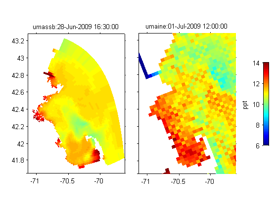

Contents
Specify input variables
var='temp';
itime=1;
uri1 ='http://coast-enviro.er.usgs.gov/thredds/dodsC/gom_interop/umassb/latest';
ilev1=1;
itime1=37;
uri2 ='http://coast-enviro.er.usgs.gov/thredds/dodsC/gom_interop/umaine/latest';
ilev2=1;
itime2=13;
Call njTBX functions
[d1,g1] = nj_grid_varget(uri1,var,[itime1,ilev1,1,1],[1,1,inf,inf]);
[d2,g2] = nj_grid_varget(uri2,var,[itime2,ilev2,1,1],[1,1,inf,inf]);
Plot data
cax=[6 14];
clf;set(gcf,'color','white');
ax1=axes('pos',[.1 .1 .35 .8]);
pcolorjw(g1.lon,g1.lat,double(d1));dasp(mean(g1.lat(:)));
set(gca,'tickdir','out');
caxis(cax);
ii=strfind(uri1,'/');
if ~isempty(ii),
title([uri1(ii(end-1)+1:ii(end)-1) ':' datestr(g1.time)],'interpreter','none');
else
title(uri1,'interpreter','none');
end
ax1=axis;
ax2=axes('pos',[.5 .1 .35 .8]);
pcolorjw(g2.lon,g2.lat,double(d2));dasp(mean(g2.lat(:)));
set(gca,'tickdir','out');
set(gca,'yticklabel',' ');
caxis(cax);
ii=strfind(uri2,'/');
if ~isempty(ii),
title([ uri2(ii(end-1)+1:ii(end)-1) ':' datestr(g2.time)],'interpreter','none');
else
title(uri2,'interpreter','none');
end
axis(ax1);
pclegend(cax',[.95 .3 .02 .4],gcf,'ppt');
